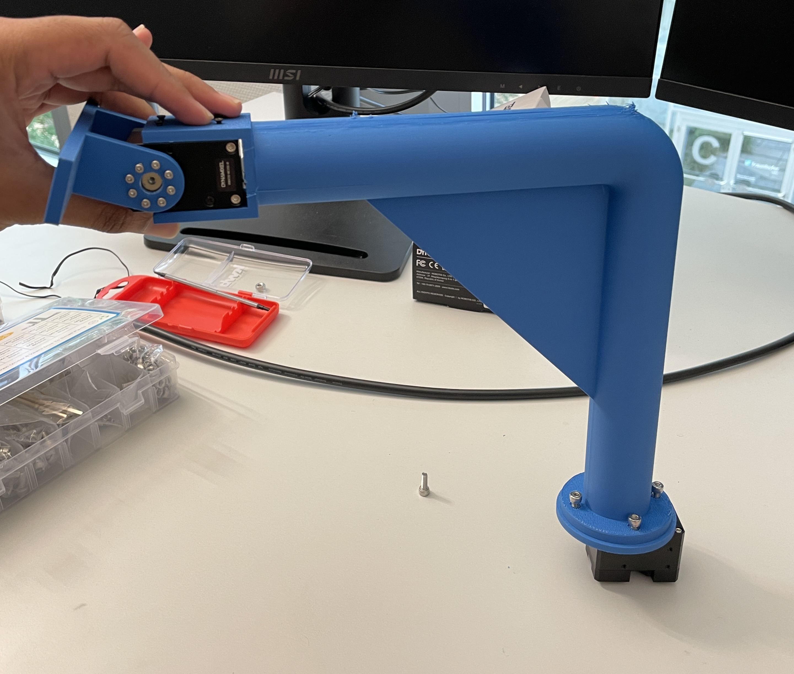

01 / Master Project · 2 DOF
Pan-Tilt Robotic Head

ROS 2 · Fusion 360 · DynamixelScroll to explore ↓
01 / RGB-D
Start at the sensor.
An Intel RealSense D455f brings depth into the picture.
From CAD to the workbench.
Developing a 2-DOF pan-tilt sensor head for gaze estimation, using ROS 2, Fusion 360, Dynamixel actuators and an Intel RealSense D455f.
My work on this project ↗Scroll view: an illustration of the prototype. The photograph and CAD parts show the actual hardware.